Spallwork for Blender
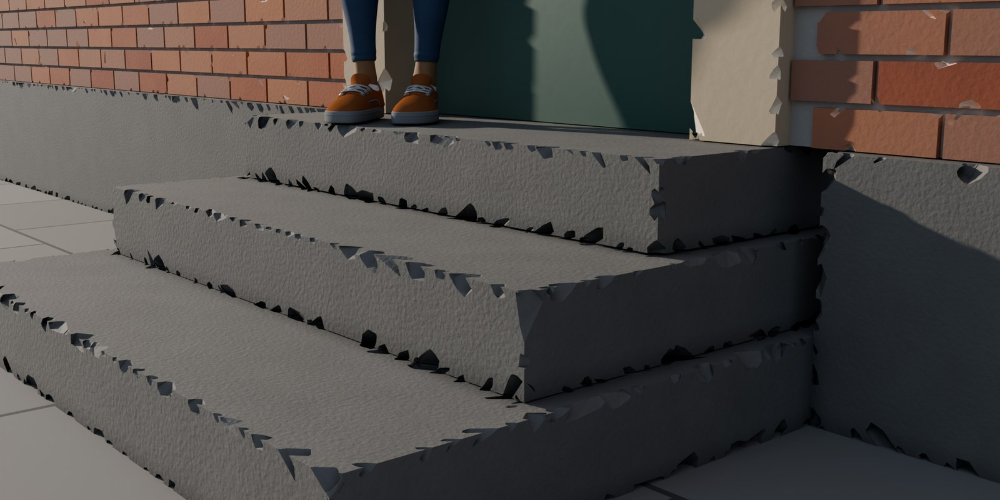
Remesh and Displace fuse your bricks into one blob? Spallwork chips the edges of closed meshes and keeps every separate brick or block separate, sizes its chips in metres whatever the object's scale, and lets you Revert even after Apply and reopening the file.
$15, one-time, source included (GPL-3.0-or-later). Updates at no charge. Blender 4.5 LTS to 5.2 LTS, tested on 4.5.15, 5.0.1, 5.1.2 and 5.2.3 (official Linux builds; Windows and macOS not yet tested).
Polar checkout · download by email · 14-day refund if it doesn't work as described · no subscription, no license key, no account · details
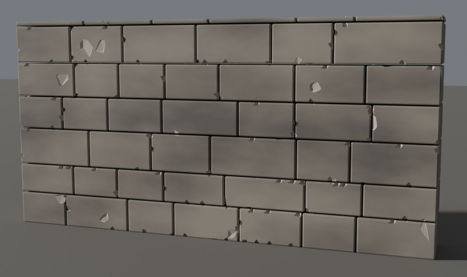
Game kits. Every block of a wall module stays its own closed part. Target faces reduces the applied result for the engine: our 46-block castle wall (2,484 faces, 4,968 triangles) at Target 9,936 came out at 10,037 faces, 27,098 triangles, with 622 chips. The numbers to type

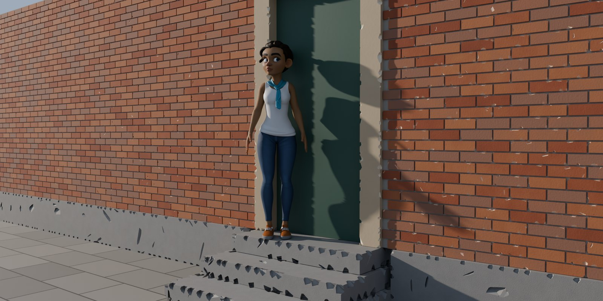
Archviz. Old steps, sills, plinths and facades at a chip size in metres, in a metre or a centimetre scene. A wall that is a plane with a Solidify modifier works without applying it. The whole facade
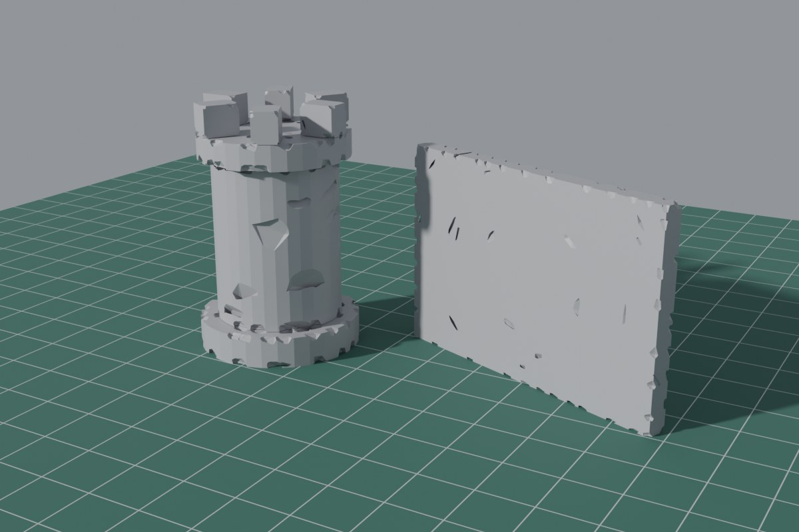
Tabletop. Type the chip size in millimetres. After Apply, the STL of each of our five test pieces was watertight and PrusaSlicer sliced it. Parts that touch each other, like stacked crates, are the exception, and Check model says so. It chips edges and pits faces; it does not make rubble. What we measured
The top image is a render, not a mock-up: our granite steps and plinth, about 1.5 m from the camera, at the Worn look with Chip size 0.04 m, Amount 0.95 and Depth 0.35, typed in the panel, then rendered with Cycles in Blender 5.2.3 with Spallwork 1.3.0, so at Final detail (565 chips on the steps, 737 on the plinth). The chips are crisp breaks, not rounded wear. Rain, Blender Studio's free character, stands on the top step. How these images were made.
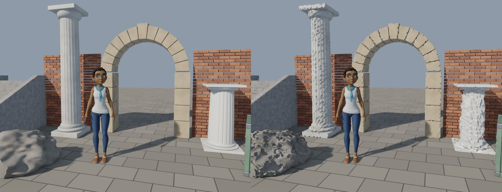
Watch it work
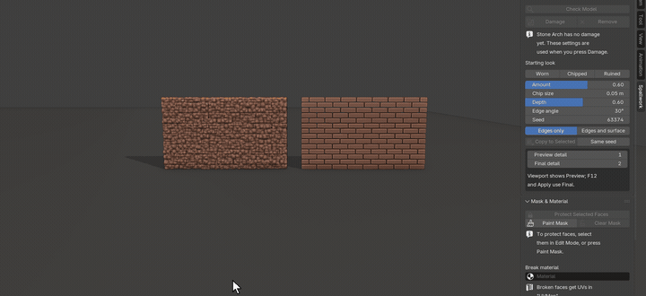
![The courtyard in Solid shading with nothing selected. The cursor moves into the viewport and A selects all 14 stone pieces, outlined in orange (Rain cannot be selected in this file). The cursor clicks Damage in the Spallwork tab: after a few seconds chips appear along the edges of the column, the arch, the walls, the stairs and the rock, and the panel shows Last update. Worn is clicked: smaller, shallower chips. Chipped: medium chips. Ruined: big chips, and pits on the flat faces of the columns and the stump](img/damage-worn-chipped-ruined.gif)
What it does
- Damage many objects at once, and keep editing. Select one or many meshes in Object Mode and press Damage. Each gets a "Spallwork" modifier, and its own mesh is not touched until you press Apply. Three starting looks, Worn, Chipped and Ruined, only set the sliders: Amount, Chip size, Depth, Edge angle, Seed, and Mode (edges only, or edges and surface). With several objects selected, a change to a slider goes to all of them, as the looks do; Seed stays per object. Copy to Selected gives other objects all of the active object's settings, each with its own seed unless you tick Same seed. Remove takes the damage off and leaves the object as it was.
- Chips in metres. Chip size is a physical size: an object at unapplied scale 3, a parent's scale, or a scale of (1, 1, 3) gets chips about the same size as an unscaled copy (in our test, median chips of 0.066 to 0.073 m against 0.073 m, at Chip size 0.05 m), and a scene in centimetres gets the same sizes.
- Built for walls of separate pieces. Each loose part is chipped on its own. A part that would be left with less than a fifth of its volume is put back whole.
- Check model, for imported and messy meshes. It reports open edges, edges shared by three or more faces, faces pointing inward, unapplied or negative scale, the number of loose parts and whether any of them touch, and zero-area faces, each in one line, with a fix button where Blender can fix it safely: Weld Seams for meshes split at UV seams (glTF imports arrive like that), Fill Holes, Fix Normals, Remove Zero-Area Faces. A sheet with a Solidify modifier, or half a model with a Mirror, is judged as the modifiers leave it, so you do not have to apply them first.
- A light viewport, full detail at render and Apply. Preview detail is what the viewport shows; Final detail is used for F12 renders and for Apply, with no switching by hand. Last update shows what the active object's damage took to compute.
- Masks and a Break material. Protect Selected Faces in Edit Mode, or Paint Mask in Weight Paint, and the damage leaves those faces alone. Pick a Break material and the faces the damage creates get it; every other face keeps its material and UVs. Broken faces get box-projected UVs, so a tiling texture shows on them.
- Apply for export, Revert any time. Apply turns the damage into ordinary mesh data with outward normals, removes zero-area slivers, and dissolves the vertices that make triangles fold over, so an exported STL is watertight as long as the object's loose parts do not touch each other (see limits); an object with no material gets no empty slot. Target faces reduces the applied result for game assets and keeps every part closed; it counts Blender faces, and the report gives the triangles too (see below). Revert to Original brings back the exact mesh from before Apply, even after you save, close and reopen the file, until you choose Forget Original.
- One tab. Everything is in the Spallwork tab of the 3D Viewport sidebar, in three sections you can fold: Damage, Mask & Material, Apply. No menus, pop-ups or shortcuts are added, and every setting is saved in your .blend file.
Chip size in metres, on a scaled object
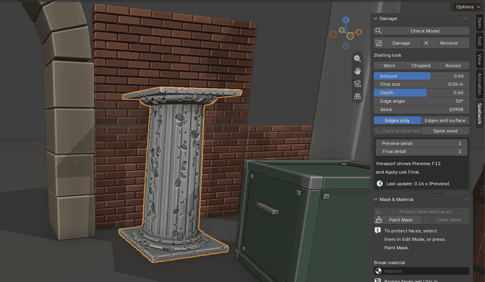
Keep a part clean, give the break its own material
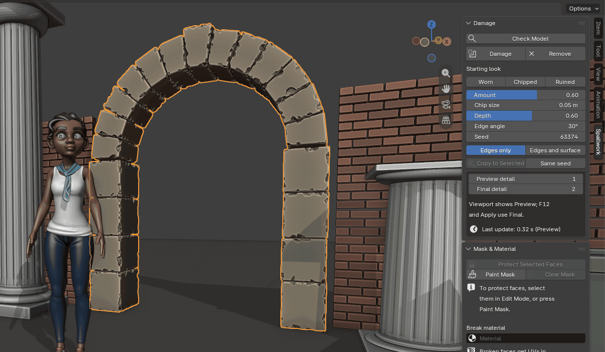
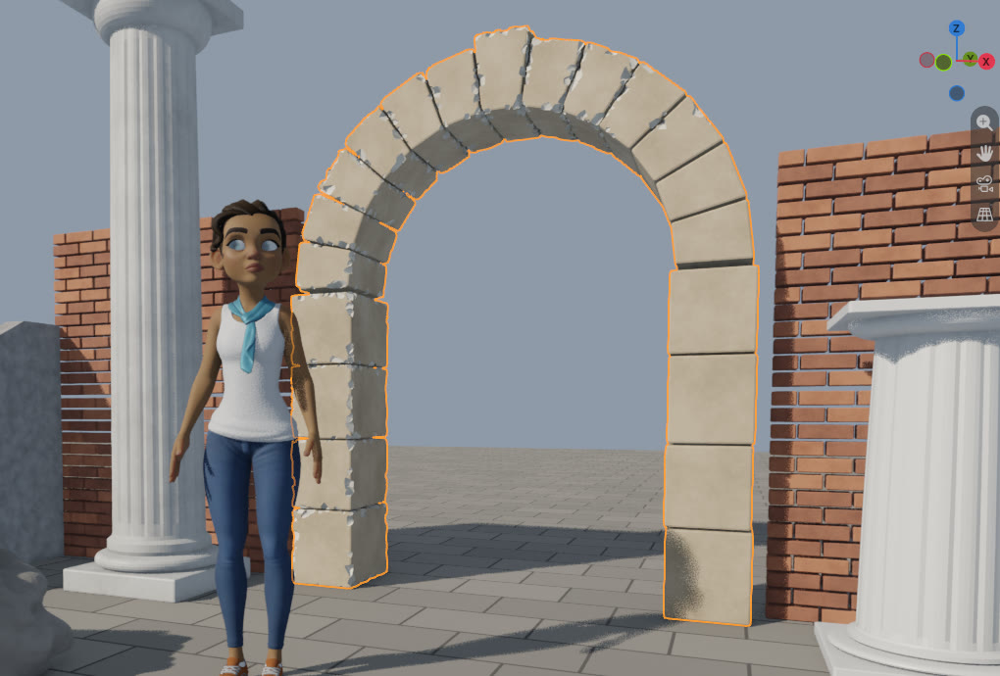
In our tests no cut fell on a protected face in 144 runs (2 models, 3 looks, Preview and Final, 12 seeds each), and faces the damage did not cut kept their UVs.
A real character as a stone statue
Rain's own meshes, posed, converted to one mesh with Convert to Mesh and Join, as you would to make a statue: 30,660 faces, 58 loose parts, and open edges everywhere a character mesh is open. Damage refuses that mesh and says why; Check model shows what to do.
![A grey statue of Rain on a plinth in front of a sandstone arch, selected. Check Model is clicked: the panel lists '2,040 open edges: Weld Seams (merge by distance) closes 72 split seams; 1,968 are holes. Weld first, then Fill Holes', with a Weld Seams button, and '58 loose parts: each is chipped on its own. Parts that overlap are chipped as one.' Weld Seams is clicked: 1,968 open edges remain, and a Fill Holes button appears. Fill Holes is clicked: 'No open edges: the mesh is closed', 55 loose parts. Damage is clicked: the findings close and chips appear on her arms, legs and face; Worn is clicked and the chips get smaller](img/rain-statue-check-weld-fill-damage.gif)
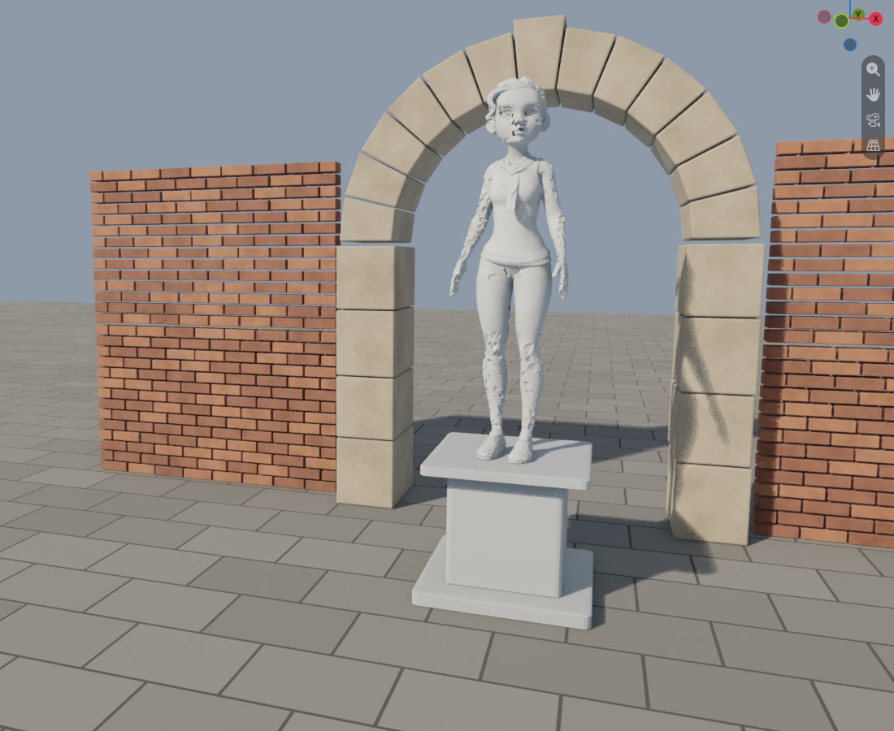
Apply for export, Revert any time
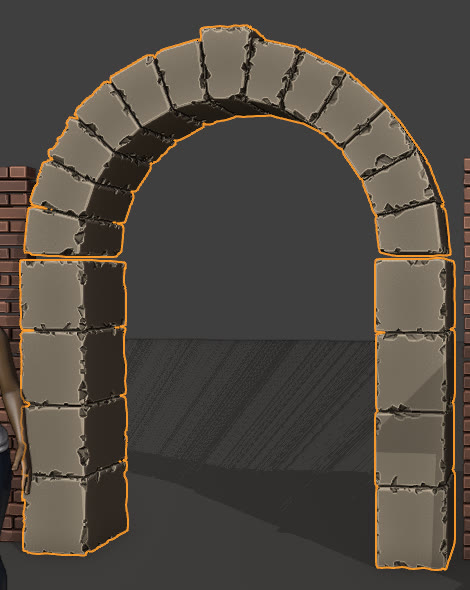
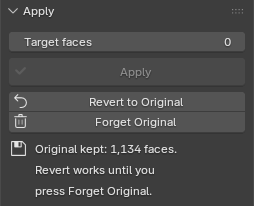
Blender's status bar after Apply in this capture (1.1.0): "Applied 1 object. Stone Arch: applied at Final detail, 38,308 faces. Revert to original brings the old mesh back." Revert to Original then reported "Reverted 1 object to the original mesh: Stone Arch." and the arch was back to 1,134 faces. 1.4.0's report on the same arch adds the triangle count and the slivers it removed: "38,260 faces (115,326 triangles); 34 sliver faces with no area removed". In our tests Revert gives back the exact mesh after Apply and after save, close and reopen; Blender's own modifier Apply cannot be undone once the file is reopened.
Game assets and miniatures: the numbers to type
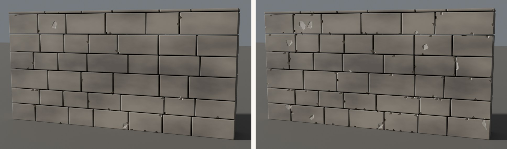
Target faces for game assets. Target faces counts Blender faces, where a quad or an n-gon is one face; a game engine counts triangles, and a chipped result has 2 to 3 triangles per face. The Apply report gives both. The chips are paid for with the faces above the model's own count, about 14 faces per low-poly chip, so a target near the model's own count leaves the result almost clean, and the Apply section warns below twice. Twice gives a light scatter; four times gives chips along most block edges. Measured on that wall (2,484 faces, 4,968 triangles, seed 7):
| Target faces | Faces after Apply | Triangles | Low-poly chips |
|---|---|---|---|
| 3,000 | 3,063 | 6,152 | 93 |
| 4,968 (twice) | 5,099 | 12,580 | 218 |
| 9,936 (four times) | 10,037 | 27,098 | 622 |
| 0 (off: full result) | 70,138 | 204,912 | 2,121 |
Chip size for miniatures. The starting looks are sized for buildings and props (3 to 10 cm chips), so a 5 cm piece gets only a handful, and the panel says so when the Chip size is more than half the object's thinnest side. Pick a look, then type the chip size: 0.004 m (4 mm) gave the tower above crisp chips. After Apply both pieces were closed with no non-manifold edges and kept 97.6% to 99.3% of their volume, on Blender 4.5.15 and 5.2.3. On the tower one 2.7 mm fragment came loose where two chips met (9 parts before, 10 after), so for a print, compare Check model's loose-part count before and after Apply.
Parts that touch. Our five pieces have no loose parts that touch each other. A stack of crates touching face to face in one object is different: each crate is chipped on its own, so the faces that lay on top of each other no longer match, and the STL is not watertight there. Check model says when an object's parts touch, and so does the Apply report. For a print, leave a 0.2 mm gap between the parts, or join them into one part before Damage; both gave watertight STL files in our test below.
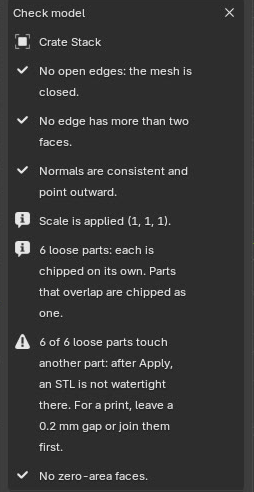
The STL, measured
With Spallwork 1.3.0 we applied five pieces of our own and exported each as STL with Blender's exporter, on 4.5.15 and 5.2.3: the tower and wall piece above, and, in a millimetre scene, a 60 × 6 × 45 mm wall with a Boolean doorway, a 10 × 18 mm column drum and a 75 × 40 × 3 mm base tile (Ruined, Chip size 1.5 mm). In every file each edge is shared by exactly two triangles, and no piece has a zero-area face (1.2.0, on 5.2.3, left 24 to 243 unshared edges per file). PrusaSlicer 2.8.1's command line read every file as manifold and sliced it with its default printer profile, warning about bed adhesion or bridges on four of the five, which is about supports and orientation.
With 1.4.0, a stack of six 10 mm crates in one object (Ruined, Chip size 1 mm, seeds 1, 2 and 3, on 4.5.15, 5.0.1, 5.1.2 and 5.2.3): touching face to face, PrusaSlicer read every STL as not manifold, with 4 to 40 open edges; with 0.2 mm gaps, and with the crates joined into one part first (Face > Intersect (Boolean), Union), every STL had each edge shared by exactly two triangles, PrusaSlicer read it as manifold and sliced it. The crates lost 1 to 7 crumbs where chips met (6 parts before, 7 to 13 after). We have not printed any of them.
What you get is chipped edges and pitted faces: a chip is never wider than about half the part's thickness, so a 6 mm wall gets small chips and no corner breaks off, and there is no rubble.
In Blender, for real
![A Blender 5.2 window in Material Preview. Blender Studio's Rain stands in a small courtyard of stone pieces: a fluted column, a sandstone arch, two brick walls, a staircase, a rock, a short column, a crate and a barrel. Every stone piece has chipped edges and pitted faces from Spallwork's Ruined look. On the right, the Spallwork tab: Check Model, Damage and Remove, the Worn, Chipped and Ruined buttons, Amount 0.85, Chip size 0.1 m, Depth 0.90, Edge angle 25°, Edges and surface, Preview detail 1, Final detail 2, Last update 0.39 s (Preview), then the Mask & Material and Apply sections](img/hero-window-ruined.jpg)
![The Spallwork tab at real size: the Damage section with Check Model, Damage and Remove, Starting look Worn, Chipped, Ruined, Amount 0.60, Chip size 0.05 m, Depth 0.60, Edge angle 30°, Seed, Edges only and Edges and surface, Copy to Selected and Same seed, Preview detail 1, Final detail 2, 'Viewport shows Preview; F12 and Apply use Final.', Last update 0.31 s (Preview); Mask & Material with Protect Selected Faces, Paint Mask, Clear Mask, 'Mask: vertex group Spallwork Mask. Weight 1 keeps faces free of damage.', Break material Fresh Break, 'Broken faces get UVs in UVMap.'; Apply with Target faces 0, Apply, Revert to Original and Forget Original](img/mask-break-material.jpg)
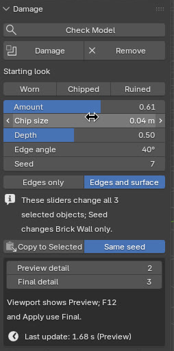
Character: Rain Rig (CC) Blender Foundation | studio.blender.org, used under CC BY 4.0. We switched her arms to FK and lowered them, placed her in a scene of our own, and for the statue converted her posed meshes to one mesh. Rain is not included with Spallwork, and Blender Studio does not endorse it.
How we tested
Every release runs the full test suite headless on the official Linux builds of Blender 4.5.15, 5.0.1, 5.1.2 and 5.2.3. Each model is damaged at each starting look, at Preview and at Final detail, and every run must lose no loose part, leave no face pointing inward, and keep 60 to 100% of the volume. For 1.4.0, the suite is green on each version: 197 tests pass, and one more, which checks chips seen through a scaled collection instance, is a known limit listed below and marked as an expected failure (its fix is a button, Make Instances Real, which has its own passing test). The window itself was driven by real clicks through 45 steps on 4.5.15 and on 5.2.3, with 45 of 45 passing, including a sheet with an unapplied Solidify, the Target faces warning, one Chip size typed with three objects selected, Check model on crates that touch, and a look clicked after Select All with nothing active.
The test models
12 purpose-built models (ours, clean and closed, with small gaps between separate parts). All pass on all four versions.
| Model | Faces | Loose parts |
|---|---|---|
| Brick wall of separate bricks | 3,094 | 119 |
| Fluted column with base and capital | 6,252 | 3 |
| Stone stairs with cheek walls | 250 | 3 |
| Statue bust on a pedestal | 46,939 | 2 |
| Stone arch of 13 voussoirs on piers | 1,134 | 21 |
| Oak barrel: staves, heads and hoops | 4,276 | 24 |
| Kitbash crate | 2,304 | 52 |
| Converted text ("RUINS") | 2,140 | 5 |
| Rock with fractured faces | 12,243 | 1 |
| Window frame with sill and lintel | 238 | 3 |
| Pillar with three-segment bevels | 294 | 3 |
| Carved relief panel | 110,221 | 1 |
Third-party imports. Four CC0 models from the Khronos glTF sample collection (a water bottle, a lantern in three objects, an avocado and a chair's fabric), imported with Blender's own glTF importer and left as they arrived: split at UV seams, with holes. Each went through Check model's Weld Seams and Fill Holes, then Damage at every look. All pass on all four versions. Smooth, rounded models get few chips: Spallwork chips edges sharper than the Edge angle, and a pebble-smooth avocado has few.
Measured speed, on our 12 test models. Blender 5.2.3 LTS on Linux, default detail, on a cloud machine with an Intel Xeon at 2.10 GHz (4 threads) and 15.7 GB RAM, no GPU (geometry runs on the CPU); each figure is the median of three runs of one slider change (Preview) or one full evaluation (Final). Your times depend on your computer and your model.
- Chipped look (the default): median 0.17 s per Preview update. On every tested Blender, each of the 11 models up to 47,000 faces stayed under 0.4 s, and the 110,221-face carving took 1.53 to 1.76 s.
- Ruined look: median 0.22 s; the 11 models up to 47,000 faces stayed at or under 0.40 s on 5.2.3 (0.42 s on 4.5.15), and the carving took 1.70 s (2.05 s on 4.5.15).
- Heavier models cost more. Our test models have plain or few bevels. A 46-block castle wall whose blocks have two-segment bevels (2,484 faces) took 0.40 s per change at Chipped and 0.76 s at Ruined on the same machine and Blender. If the viewport feels slow, lower Preview detail or Amount.
Per-model times (Blender 5.2.3)
| Model | Faces | Chipped: Preview | Chipped: Final (F12 / Apply) | Ruined: Preview | Ruined: Final |
|---|---|---|---|---|---|
| Brick wall (119 bricks) | 3,094 | 0.26 s | 0.77 s | 0.27 s | 0.76 s |
| Fluted column | 6,252 | 0.27 s | 0.65 s | 0.34 s | 0.83 s |
| Stone stairs | 250 | 0.15 s | 0.44 s | 0.21 s | 0.59 s |
| Statue bust | 46,939 | 0.33 s | 0.39 s | 0.40 s | 0.43 s |
| Stone arch (21 stones) | 1,134 | 0.36 s | 1.00 s | 0.25 s | 0.73 s |
| Barrel (24 parts) | 4,276 | 0.13 s | 0.32 s | 0.12 s | 0.25 s |
| Kitbash crate (52 parts) | 2,304 | 0.18 s | 0.48 s | 0.12 s | 0.30 s |
| Converted text | 2,140 | 0.06 s | 0.12 s | 0.06 s | 0.12 s |
| Rock | 12,243 | 0.14 s | 0.30 s | 0.22 s | 0.48 s |
| Window frame | 238 | 0.12 s | 0.31 s | 0.11 s | 0.27 s |
| Pillar with bevels | 294 | 0.14 s | 0.40 s | 0.12 s | 0.28 s |
| Carved relief panel | 110,221 | 1.69 s | 2.57 s | 1.70 s | 2.26 s |
The Last update times in the GIFs and panels above were shown while the screen was being recorded, on 4-thread cloud machines (Intel Xeon at 2.30 GHz for the 1.1.0 and 1.2.0 captures, 2.10 GHz for the 1.3.0 ones); they are not part of these figures.
Not yet tested: Windows and macOS builds. Spallwork uses only Blender's own Python API and no operating-system calls, so we expect no difference, but we have not run it there. Tell us if anything behaves differently.
Details
- Buying: secure checkout by Polar. The download arrives by email right after payment; the zip includes the full source. One payment of $15 for one artist, every feature included, updates at no charge. No subscription, no license key, no account, no Lite edition. A studio license for up to 10 artists is $49: write to support@ochrestack.com. If it doesn't work as described and we can't fix it, email us within 14 days of purchase for a full refund (terms).
- Blender 4.5 LTS to 5.2 LTS. Installed as an extension from a zip.
- GPL-3.0-or-later. Full source code included with your purchase.
- Privacy: Spallwork makes no network calls. It reads and writes only the open .blend file, and it collects nothing: no telemetry, no analytics, no account and no license key.
- Support: support@ochrestack.com, with your Blender version, your operating system and, if you can, the .blend file or a screenshot of the Spallwork tab.
Documentation
The full manual (README.md) is inside the zip: open the zip to read it, but install the zip itself, as it is. The first steps are also online: Spallwork quick start.
Install
- After checkout, download
spallwork-1.4.0.zipfrom the link in Polar's email. Do not unzip it. - In Blender (4.5 LTS or newer), open Edit > Preferences > Get Extensions.
- Open the drop-down menu at the top right (the rightmost ⌄; the arrow beside it belongs to the filter), choose Install from Disk... and pick the zip.
- Press N in the 3D Viewport and open the Spallwork tab.
If Get Extensions asks about internet access, Continue Offline is fine: Spallwork needs none. Blender may then show its own yellow "Repository Alert" saying the extensions.blender.org data is unavailable. That is about Blender's online catalogue, not Spallwork; ignore it.
Known limits
- Closed meshes only. Damage refuses open meshes, meshes with internal faces and meshes with faces pointing inward, and says why. Check model fixes split seams and holes; a sheet needs thickness first (a Solidify modifier is enough; you do not have to apply it). Curves, text and Grease Pencil must be converted to a mesh first.
- Overlapping parts fuse. Loose parts of one object that overlap or pass through each other are chipped as one where they overlap.
- Collection instances scale the chips. An instance at scale 3 shows its source object's damage three times the size you set, because every instance draws the same mesh. Check model flags it, and its Make Instances Real button gives each instance an object of its own, chipped at the set size.
- Fill Holes caps every hole, including one that should stay open, such as a window. Look before you press Damage.
- Other UV maps get a box projection on the broken faces. Repack a lightmap after Apply if your engine needs unique lightmap UVs.
- Large models update more slowly (see Measured speed). Very heavy settings make updates slow, and Apply cannot be cancelled once it starts.
- Masks protect whole faces, with no soft falloff.
- Parts that touch give an STL that is not watertight there. Loose parts of one object that touch each other (stacked crates, butted blocks) are each chipped on their own, so their touching faces no longer match after Apply. A render or a game does not mind; a slicer does (4 to 40 open edges on our six-crate stack). Check model and the Apply report say when parts touch. For a print, leave a 0.2 mm gap or join the parts into one first.
- Chips can knock a small fragment loose where two chips meet at a corner (one 2.7 mm piece on our 5 cm tower, one crumb on our base tile, 1 to 7 crumbs on six 10 mm crates at 1 mm chips). Compare Check model's loose-part count before and after Apply if that matters, as for a print.
- Thin parts get small chips. A chip is never wider than about half the part's thickness; corners of thin walls do not break off.
- Not a printing tool. Our STL files of pieces whose parts do not touch were watertight and sliced, but we have not printed them; Spallwork adds no supports and checks no wall thickness.
- Apply bakes the modifiers above Spallwork. Revert restores them. Bound modifiers (Surface Deform, Mesh Deform) need binding again.
- Don't press Shift+N on a heavily chipped small part. Normals already come out outward, and Blender's Recalculate Outside can guess wrong there and turn it inside out.
- No cracks, fracture, rebar, debris, grime shaders or wood splinters in version 1. English only. Tested on Linux builds only so far.
How these images were made
Four images are Cycles renders: the close-up of the steps at the top, made with Spallwork 1.3.0 (the plinth and steps at Worn with Chip size 0.04 m, Amount 0.95 and Depth 0.35, typed in the panel; the bricks Ruined at 0.045 m; the door surround Chipped), the whole facade and the tabletop pieces, made with 1.2.0, whose damage node group 1.3.0 and 1.4.0 keep unchanged, and the game wall at twice and four times its own face count (the game-kit card shows the second), made with 1.4.0 (seed 7, a pale "Fresh Stone" Break material, low sun). Each scene is built in code by us, damaged by pressing Spallwork's own operators, and rendered as F12 would, at Final detail; nothing was drawn on them. For the close-up our granite material was darkened where the stone is occluded, so the steps read as weathered; that is the scene's material, not Spallwork. Every other image and GIF on this page, apart from the demo video and its GIF, is a capture of a real Blender 5.2.3 LTS window on Linux, 1920x1080, with the Spallwork zip installed through Blender's extension installer: the Check model panel on touching crates with 1.4.0; the GIF of Damage and the three looks, and the panel with three objects selected, with 1.3.0; the statue GIF and the Check model panel with 1.2.0; the rest with 1.1.0. In those older captures, 1.4.0 would differ only in small panel details: before the first Damage its Seed field shows the object's own seed instead of 0, with several objects selected the Damage section has one more line, with nothing active it has one more, and Check model adds a line when loose parts touch. The character is Rain v3.3 as downloaded from studio.blender.org (CC BY 4.0, credit further up), in her own rig with her arms switched to FK and lowered. The stone pieces are the models we test Spallwork on (our own, built in code) with procedural stone, brick and wood materials of ours; two brick walls are three copies each of the test wall, and the short column is the test column at an unapplied scale of 0.42 in height. Every click, key, box selection and typed letter in the GIFs is a real input event sent to the window, played at the speed it happened, and every number in the panel and the status bar is Spallwork's or Blender's own. Only the view (the camera position) was set by script. The GIFs use Solid shading, which Blender draws instantly; the stills use Material Preview, which on this machine (no graphics card) needed about a minute to settle, so they were taken after it had. Nothing was drawn on the images.
The demo video and its GIF were captured with Spallwork 1.2.0, differently, in the same Blender and scenes at 2560x1174: each frame is one real input step (a pointer step, a click, a key, a wheel notch, a typed letter) followed by one redraw of the window, so waits such as Damage on 14 objects take no screen time. The pointer arrow and the ochre click rings are drawn by the edit at the position logged for each frame, and the captions and cards are added by the edit; the push-ins are crops of the captured frames. The rendered courtyard at the end is EEVEE, 4 samples, after Damage, Ruined and Apply (Final detail) on the 14 pieces; it was rendered for the 1.1.0 cut and kept, because it shows no interface and 1.2.0 makes the same geometry (its damage node group is unchanged).
$15 once, source included, updates at no charge · Polar checkout · 14-day refund if it doesn't work as described · Blender 4.5 LTS to 5.2 LTS, tested on Linux